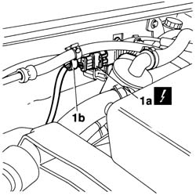
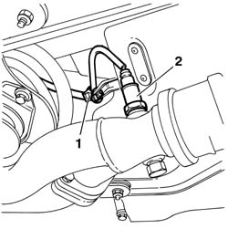
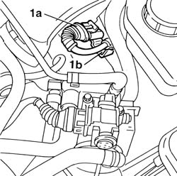
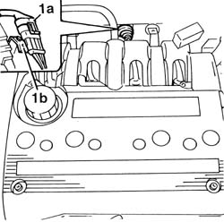
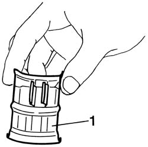
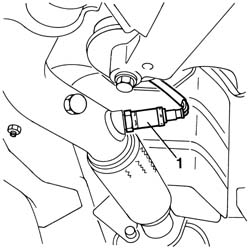
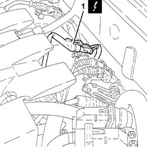
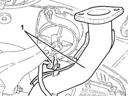

1080B60 LAMBDA SENSOR - R.R.
- Path
- Procedures > 10 ENGINE > 1080 EXHAUST EMISSION CONTROL SYSTEM > 1080B exhaust emission control system > 1080B60 LAMBDA SENSOR - R.R.
- Kind
- repair procedure (removal / refitting; the operation number is the code)
- Applies to
- engines: 1.6 TS , 1.8 TS, 2.5 V6; all production periods
- Interactive page
- https://sloeber94.github.io/elrnDB-a156/en/#/3237584
Applies to: engines: 2.5 V6; all production periods
 Removing
Removing
 Refitting
RefittingPosition the vehicle on the ramp.
Disconnect the battery negative (-) terminal.
 | Name | Connector |
|---|---|---|
- | Battery |
1. Disconnect the electrical connection from lambda probe (1a) and release the wiring from fastening (1b).
| Name | Connector |
|---|---|---|
1a | Lambda sensor |

Applies to: engines: 2.5 V6; all production periods
Raise the vehicle.
1. Release the lamba probe electrical wiring from its fastening.
2. Undo and remove the Lambda sensor complete with electrical wiring.

Applies to: engines: 2.5 V6; all production periods
Refitting
RemovingLower the vehicle.
Place the Lambda sensor, complete with electrical wiring, back in its housing and tighten it to the recommended torque.
 | Fastening | Component | Ø | Value (daNm) |
|---|---|---|---|---|
- | - | LAMBDA PROBE | M18 | 4.0 ÷ 5.0 |
Raise the vehicle.
Fit the lambda probe to the exhaust manifold and secure the wiring to the collar.
Lower the vehicle.
Connect the electrical connection for the Lambda sensor and fix the electrical wiring to the collars.
Connect the battery terminal (-).
Remove the car from the ramp.
Applies to: engines: 1.6 TS , 1.8 TS; all production periods
Removing
RefittingPosition the vehicle on the ramp.
Disconnect the battery negative (-) terminal.
| Name | Connector |
|---|---|---|
- | Battery |
Applies to: engines: 1.6 TS ; all production periods
1. Disconnect the electrical connection for the Lambda sensor and release the electrical wiring from its attachments.
| Name | Connector |
|---|---|---|
1 | Lambda sensor |

Applies to: engines: 1.6 TS ; all production periods
1. Disconnect the electrical connection for the Lambda sensor and release the electrical wiring from its attachments.
| Name | Connector |
|---|---|---|
1 | Lambda sensor |

Applies to: engines: 1.6 TS , 1.8 TS; all production periods
7055B54 under-engine guard - r r
1. Remove the Lambda sensor protection.

Applies to: engines: 1.6 TS , 1.8 TS; all production periods
1. Unscrew the Lambda probe from the exhaust pipe and remove together with its wiring.

Applies to: engines: 1.6 TS , 1.8 TS; all production periods
Refitting
RemovingFit the Lambda sensor complete with electrical wiring on the exhaust pipe and tighten it to the specified torque.
| Fastening | Component | Ø | Value (daNm) |
|---|---|---|---|---|
- | - | LAMBDA PROBE | M18 | 4.0 ÷ 5.0 |
Fit the Lambda sensor protection.
Secure the lambda probe wiring using the collars.
7055B54 under-engine guard - r r
Connect the electrical connection for the Lambda sensor and secure.
Connect the battery terminal (-).
Remove the car from the ramp.
Applies to: engines: 1.6 TS , 1.8 TS; all production periods; only with equipment: Euro 3
Removing
RefittingPosition the vehicle on the ramp.
Ensure that the ignition key is in the OFF postition, then disconnect the battery negative terminal.
| Name | Connector |
|---|---|---|
- | Battery |
1. Disconnect the electrical connection for the Lambda sensor and release the electrical wiring from the band.
| Name | Connector |
|---|---|---|
1 | Lambda sensor |

Applies to: engines: 1.6 TS , 1.8 TS; all production periods; only with equipment: Euro 3
Proceed with the removal 1080B62 catalytic converter - r + r .
1. Release the catalytic preconverter from the flexible mounting.

Applies to: engines: 1.6 TS , 1.8 TS; all production periods; only with equipment: Euro 3
Remove the Lambda sensor after having released the electrical wiring from the fastenings on the engine bulkhead.
Applies to: engines: 1.6 TS , 1.8 TS; all production periods; only with equipment: Euro 3
Refitting
RemovingRestore the fastenings securing the lambda sensor electrical wiring to the bulkhead.
Restore the catalytic converter protection.
Secure the catalytic preconverter to the flexible mounting.
Proceed with the refitting 1080B62 catalytic converter - r + r .
Connect the electrical connection for the Lambda sensor and fix the electrical wiring using the upper band.
Connect the battery terminal (-).
Remove the car from the ramp.
Topics linked from this page (5)
- 1080B62 catalytic converter - r + r
- 7055B54 under-engine guard - r r
- A1 Battery
- A1B Battery ( BATTERY NEGATIVE )
- K40 Lambda sensor